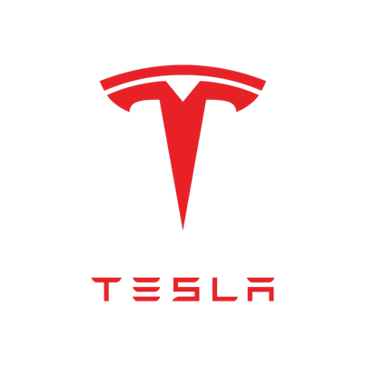
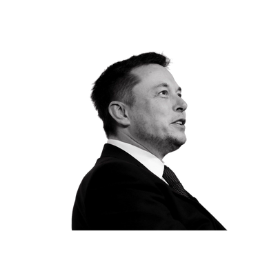

Elon Musk
Elon Reeve Musk FRS ( born June 28, 1971) is a business magnate, investor, and philanthropist. He is the founder, CEO, and Chief Engineer at SpaceX; angel investor, CEO, and Product Architect of Tesla, Inc.; founder of The Boring Company; and co-founder of Neuralink and OpenAI. With an estimated net worth of around US$265 billion as of May 2022,[4] Musk is the wealthiest person in the world according to both the Bloomberg Billionaires Index and the Forbes real-time billionaires list.[5][6]
Musk was born to a Canadian mother and White South African father and raised in Pretoria, South Africa. He briefly attended the University of Pretoria before moving to Canada at age 17. He matriculated at Queen's University and transferred to the University of Pennsylvania two years later, where he received a bachelor's degree in Economics and Physics. He moved to California in 1995 to attend Stanford University but decided instead to pursue a business career, co-founding the web software company Zip2 with his brother Kimbal. The startup was acquired by Compaq for $307 million in 1999. The same year, Musk co-founded online bank X.com, which merged with Confinity in 2000 to form PayPal. The company was bought by eBay in 2002 for $1.5 billion.
In 2002, Musk founded SpaceX, an aerospace manufacturer and space transport services company, of which he serves as CEO and Chief Engineer. In 2004, he joined electric vehicle manufacturer Tesla Motors, Inc. (now Tesla, Inc.) as chairman and product architect, eventually assuming the position of CEO in 2008. In 2006, he helped create SolarCity, a solar energy company that was later acquired by Tesla and became Tesla Energy. In 2015, he co-founded OpenAI, a nonprofit research company that promotes friendly artificial intelligence (AI). In 2016, he co-founded Neuralink, a neurotechnology company focused on developing brain–computer interfaces, and founded The Boring Company, a tunnel construction company. He also agreed to purchase the major American social networking service Twitter in 2022 for $44 billion. Musk has proposed the Hyperloop, a high-speed vactrain transportation system. He is the president of the Musk Foundation, an organization which donates to scientific research and education.
Musk has been criticized for making unscientific and controversial statements, such as spreading misinformation about the COVID-19 pandemic. In 2018, he was sued by the US Securities and Exchange Commission (SEC) for falsely tweeting that he had secured funding for a private takeover of Tesla; he settled with the SEC, but did not admit guilt, and temporarily stepped down from his Tesla chairmanship. In 2019, he won a defamation case brought against him by a British caver who had advised in the Tham Luang cave rescue.
Education
Aware that it would be easier to enter the United States from Canada, Musk applied for a Canadian passport through his Canadian-born mother. While awaiting the documentation, he attended the University of Pretoria for five months; this allowed him to avoid mandatory service in the South African military. Musk arrived in Canada in June 1989, and lived with a second cousin in Saskatchewan for a year, working odd jobs at a farm and lumber-mill. In 1990, he entered Queen's University in Kingston, Ontario. Two years later, he transferred to the University of Pennsylvania, where he graduated in 1997 with a Bachelor of Arts degree in physics and a Bachelor of Science degree in economics from the Wharton School.
In 1994, Musk held two internships in Silicon Valley during the summer: at energy storage startup Pinnacle Research Institute, which researched electrolytic ultracapacitors for energy storage, and at the Palo Alto-based startup Rocket Science Games. In 1995, he was accepted to a Doctor of Philosophy (Ph.D.) program in materials science at Stanford University in California. Musk attempted to get a job at Netscape but never received a response to his inquiries. He dropped out of Stanford after two days, deciding instead to join the Internet boom and launch an Internet startup.
